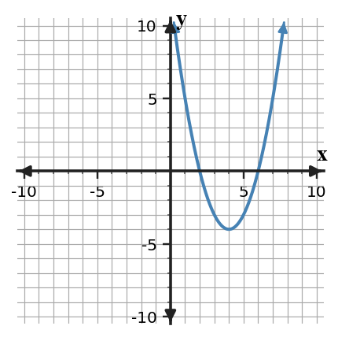
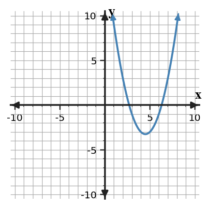

A source-grounded study guide for vocabulary, rules and relationships, section targets, representations, common misconceptions, and reasoning across DOK levels.
Unit at a Glance
What ties Unit 6 together?
Students will solve quadratic equations, analyze solution methods, model quadratic situations, and interpret solutions in equations, graphs, and contexts.
1Solve by structureUse factoring and zero-product reasoning.
→
2RewriteComplete the square and expose vertex structure.
→
3Use a general methodApply the quadratic formula and discriminant.
→
4Model & optimizeChoose methods and interpret vertices/intercepts.
Unit Vocabulary & Representations
Words and representations worth knowing cold
These source-supported terms and representation types organize the work across the unit.
6.1 Solving Quadratics by Factoring
Factored quadratic equationsZeros and $x$-interceptsTables of valuesGraphs of parabolasContextual solution statements
6.2 Completing the Square
Standard form equationsPerfect-square trinomialsVertex form expressionsAlgebra tiles or area modelsParabola vertices and axes of symmetry
6.3 Quadratic Formula
Standard form equationsQuadratic formulaDiscriminant valuesExact and approximate solutionsGraphs with two, one, or no $x$-intercepts
6.4 Choosing and Defending Solution Methods
Standard form equationsFactored form equationsVertex form equationsMethod-selection flowchartsWritten solution-method comparisons
6.5 Quadratic Modeling and Optimization
Contextual quadratic modelsGraphs with vertices and interceptsTables of input-output valuesVertex, standard, and factored formsDomain restrictions and solution interpretations
Rules, Forms & Relationships
The structures Unit 6 expects you to use
Use these relationships only in the situations where their structure applies. The section review below shows how they connect to representations and contexts.
Zero product property
$AB=0\Rightarrow A=0\;\text{or}\;B=0$
Use this after a quadratic is written as a product equal to zero.
Students will solve quadratic equations by completing the square and connect the process to vertex form.
I can…
I can build perfect-square trinomials by adding the needed constant term.
I can use completing the square to solve quadratic equations and write equivalent vertex-form expressions.
I can predict how completing the square reveals the vertex and symmetry of a quadratic function.
Summary
Today you completed the square to solve equations and rewrite quadratics in vertex form.
The key constant is $(b/2)^2$, and it must be used in a way that keeps expressions or equations equivalent.
A common error is adding the completing-square constant without balancing the equation.
Strong understanding means you can connect the algebra to perfect squares, vertex form, and graph features.

Completing-the-square and vertex connection.
Key representations:Standard form equationsPerfect-square trinomialsVertex form expressionsAlgebra tiles or area modelsParabola vertices and axes of symmetry
DOK 1
Recognize and interpret standard form equations and the basic features used in this section.
DOK 2
use completing the square to solve quadratic equations and write equivalent vertex-form expressions
DOK 3
predict how completing the square reveals the vertex and symmetry of a quadratic function
DOK 4
Model height or profit situations where the maximum or minimum is most useful
Common traps to avoid
Using $b^2$ instead of $(b/2)^2$
Why it is tempting: the middle coefficient is visible. What to check instead: take half first, then square.
Adding to only one side
Why it is tempting: the added constant seems like part of a pattern. What to check instead: keep the equation balanced.
Factoring the perfect square incorrectly
Why it is tempting: signs can disappear inside parentheses. What to check instead: match the sign of half of $b$.
Forgetting the outside adjustment in vertex form
Why it is tempting: adding inside changes the expression. What to check instead: subtract the same amount when rewriting an expression.
Students will solve quadratic equations using the quadratic formula and interpret solutions.
I can…
I can design a coefficient map that organizes $a$, $b$, and $c$ before using the quadratic formula.
I can apply the quadratic formula to solve equations with rational, irrational, or no real solutions.
I can assess how the discriminant predicts the number and type of real solutions.
Summary
Today you used the quadratic formula and discriminant to solve and interpret quadratic equations.
The formula requires a correct coefficient map from $ax^2+bx+c=0$.
A common error is losing a negative sign in $b$ or inside the discriminant.
Strong understanding means you can predict solution type, calculate exact roots, and interpret approximate roots when useful.

Quadratic solutions compared with graph intercepts.
Key representations:Standard form equationsQuadratic formulaDiscriminant valuesExact and approximate solutionsGraphs with two, one, or no $x$-intercepts
DOK 1
Recognize and interpret standard form equations and the basic features used in this section.
DOK 2
apply the quadratic formula to solve equations with rational, irrational, or no real solutions
DOK 3
assess how the discriminant predicts the number and type of real solutions
DOK 4
Model solution type using the discriminant before calculating roots
Common traps to avoid
Incorrect coefficient map
Why it is tempting: students copy numbers without signs. What to check instead: include the sign attached to each term.
Dropping the plus-minus
Why it is tempting: one square root value is easier to write. What to check instead: use both branches unless the discriminant is zero.
Simplifying the discriminant too soon
Why it is tempting: mental arithmetic feels fast. What to check instead: compute $b^2-4ac$ carefully.
Decimal when exact is requested
Why it is tempting: calculator answers are tempting. What to check instead: keep radical form for exact answers.
Students will use quadratic functions to model real-world situations and interpret maximums, minimums, and intercepts.
I can…
I can construct quadratic models from real-world constraints, data, or key features.
I can extend quadratic models to predict maximums, minimums, intercepts, and meaningful solution values.
I can assess whether a quadratic model and its solutions are reasonable for the situation.
Summary
Today you used quadratic models to interpret maximums, minimums, intercepts, and meaningful domains.
Different forms reveal different features: factored form shows zeros, vertex form shows optimum values, and graphs show overall behavior.
A common error is accepting every algebraic solution without checking context.
Strong understanding means you can connect equations, graph features, units, and reasonableness in a final conclusion.
Quadratic model with key graph features.
Key representations:Contextual quadratic modelsGraphs with vertices and interceptsTables of input-output valuesVertex, standard, and factored formsDomain restrictions and solution interpretations
DOK 1
Recognize and interpret contextual quadratic models and the basic features used in this section.
DOK 2
extend quadratic models to predict maximums, minimums, intercepts, and meaningful solution values
DOK 3
assess whether a quadratic model and its solutions are reasonable for the situation
DOK 4
Model projectile height over time
Common traps to avoid
Using the wrong feature
Why it is tempting: vertices and intercepts both stand out. What to check instead: match the feature to the question.
Accepting negative time or length
Why it is tempting: equations may produce negative roots. What to check instead: check domain restrictions.
Forgetting units
Why it is tempting: the coordinate pair looks complete. What to check instead: state seconds, feet, dollars, or square units.
Maximizing with an intercept
Why it is tempting: intercepts are easy to find. What to check instead: use the vertex for maximum or minimum.
Unit Mastery by DOK
A second way to organize the review
Sections tell you which topic you are reviewing. DOK tells you how deeply you need to use it.
DOK 1 · Recognize
Control notation and basic features
Recognize the key features and notation used in Solving Quadratics by Factoring.
Recognize the key features and notation used in Completing the Square.
Recognize the key features and notation used in Quadratic Formula.
Recognize the key features and notation used in Choosing and Defending Solution Methods.
Recognize the key features and notation used in Quadratic Modeling and Optimization.
DOK 2 · Apply & Represent
Use procedures and representations
apply the zero product property to solve quadratic equations in factored form.
use completing the square to solve quadratic equations and write equivalent vertex-form expressions.
apply the quadratic formula to solve equations with rational, irrational, or no real solutions.
use factoring, completing the square, or the quadratic formula when the equation structure supports the method.
extend quadratic models to predict maximums, minimums, intercepts, and meaningful solution values.
DOK 3 · Reason & Critique
Use evidence to defend or revise
determine whether solutions make sense in relation to a graph or context.
predict how completing the square reveals the vertex and symmetry of a quadratic function.
assess how the discriminant predicts the number and type of real solutions.
critique a selected solution method for efficiency, accuracy, and fit to the equation.
assess whether a quadratic model and its solutions are reasonable for the situation.
DOK 4 · Design & Synthesize
Build and connect models
Model break-even points using factored quadratic equations
Model height or profit situations where the maximum or minimum is most useful
Model solution type using the discriminant before calculating roots
Model decision-making with method-selection criteria
Model projectile height over time
Before the Summative
Can you do these without notes?
Vocabulary & Concepts
Solving Quadratics by Factoring
Completing the Square
Quadratic Formula
Choosing and Defending Solution Methods
Quadratic Modeling and Optimization
Representations & Procedures
apply the zero product property to solve quadratic equations in factored form.
use completing the square to solve quadratic equations and write equivalent vertex-form expressions.
apply the quadratic formula to solve equations with rational, irrational, or no real solutions.
use factoring, completing the square, or the quadratic formula when the equation structure supports the method.
extend quadratic models to predict maximums, minimums, intercepts, and meaningful solution values.
Reasoning & Modeling
determine whether solutions make sense in relation to a graph or context.
predict how completing the square reveals the vertex and symmetry of a quadratic function.
assess how the discriminant predicts the number and type of real solutions.
critique a selected solution method for efficiency, accuracy, and fit to the equation.
assess whether a quadratic model and its solutions are reasonable for the situation.
Strong Algebra work connects procedures to structure, checks representations against one another, and explains why the result fits the mathematical situation.